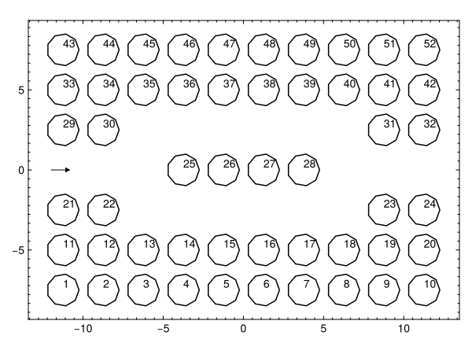

Photonic crystal
As usual, import relevant libraries.
using LinearAlgebra
using StaticArrays: SVector
using SpecialFunctions
# using GLMakie; GLMakie.activate!(inline=false, float=true)
using CairoMakie
import BoundaryWall as BWM
Now we can define our constants for the problem.
# CONSTANTS
N = 9 # number of points per element
HBAR = 1.0
MASS = 0.5
HBAR = 1.0
SIGMA= (2*MASS/HBAR^2)*(1/4*im)
NDOM = 100
zero = 13.3237
R = 1.0
θ = LinRange(0, 2pi, N+1)
TH = 180
KVEC = SVector(cosd(TH), sind(TH))
POTENTIAL_STRENGTH = -100.0
BANDED = 3
…and the geometry of such problem.
STEP = 2.0R + R/2 # diameter + constant
N_CIRCLES = (10,7)
RANGES = [-(N_CIRCLES[1]-1)*STEP/2:STEP:(N_CIRCLES[1]-1)*STEP/2,-(N_CIRCLES[2]-1)*STEP/2:STEP:(N_CIRCLES[2]-1)*STEP/2]
N_STEPS =length(RANGES)
CENTERS = vec([(i, j) for i in RANGES[1], j in RANGES[2]])
INDICES = sort([31,32,33,43,44,45,46,47,48,38,39, 40, 23, 24, 25, 26, 27, 28])
deleteat!(CENTERS, INDICES)
# POTENTIAL_STRENGTH = repeat(STRENGTH, inner=N)
CIRCLES = [BWM.createCircle(R, θ, SVector(cen)) for cen in CENTERS]
x = vcat(getindex.(CIRCLES, 1)...)
y = vcat(getindex.(CIRCLES, 2)...)
xm= vcat(getindex.(CIRCLES, 3)...)
ym= vcat(getindex.(CIRCLES, 4)...)
ds= vcat(getindex.(CIRCLES, 5)...)
rij = BWM.calcDistances(xm,ym)
Plotting this results in the following diagram,

The core of the library is the ability to have any superposition of plane waves impinge on the geometry. In this example, we focus a gaussian beam with certain waist parameters into the photonic cavity. One can observe that for different frequencies defined in ur FREQS vector, the system repsonds differently, allowing (or not) the
# domain
x0, xf = (-15.,15.)
y0, yf = (-10.,10.)
xdom = LinRange(x0, xf, NDOM)
ydom = LinRange(y0, yf, NDOM)
COORDS = [(_x,_y) for _x in xdom, _y in ydom]
XDOM, YDOM = first.(COORDS)[:], last.(COORDS)[:]
@inline function wave_function(_freq::Float64, _kvec::SVector{2, Float64}, _width::Float64)
return abs2.(reshape(
BWM.boundaryWallWave(_freq * _kvec, (k,r)->BWM.gaussianWave(k,r - SVector(-10.25, 0.0), _width; abstol=1e-3), x, y, xm, ym, XDOM, YDOM, SIGMA, ds, rij, length(ds), N, BANDED, POTENTIAL_STRENGTH),
NDOM, NDOM
)
)
end
FREQS = [1.35, 1.55, 1.65]
waves = [wave_function(f, KVEC, 4.0) for f in FREQS]

We can analyze the flow of the field using the BWM.gradient(xdom, ydom, psi) function, which returns